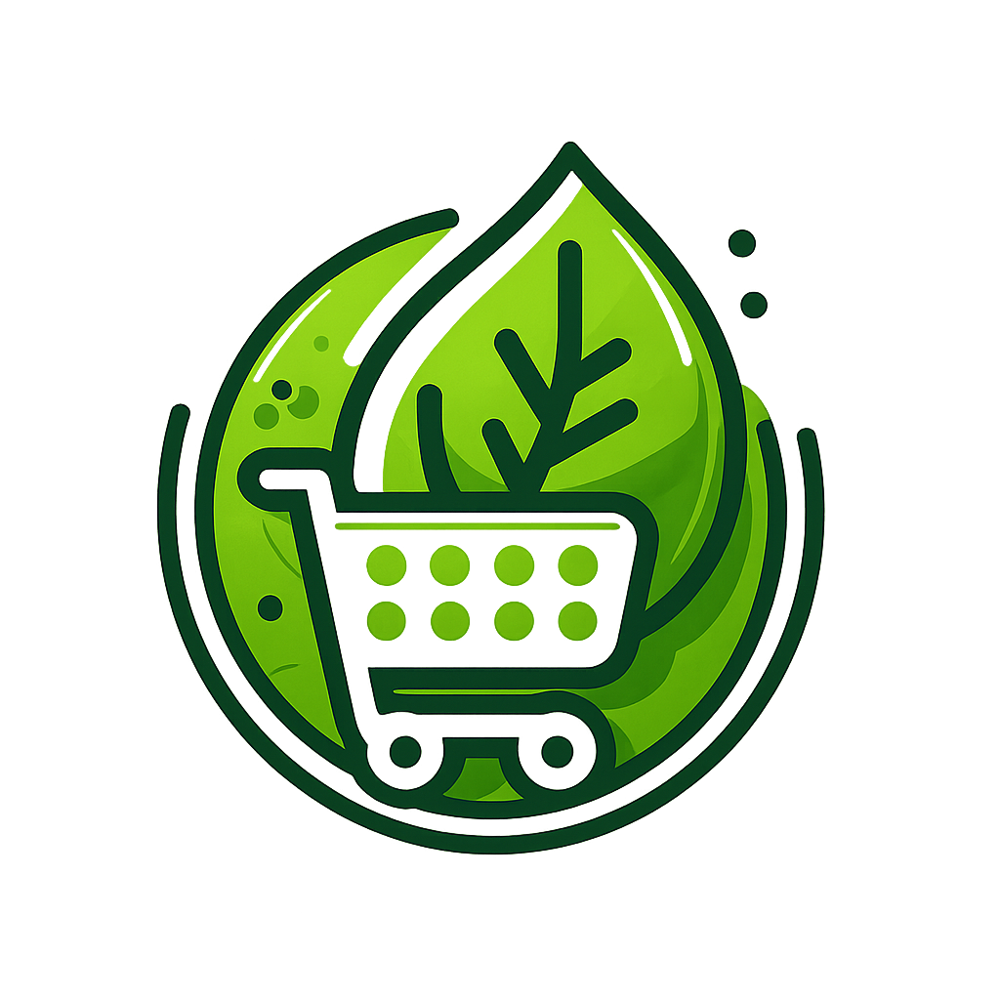

¿Quiénes somos?
GreenLink es una plataforma diseñada para conectar a los agricultores directamente con los ciudadanos, eliminando cualquier tipo de intermediario.
Nuestro objetivo es que los alimentos frescos de calidad dejen de ser una compra puntual para convertirse en un alimento de base diaria, accesible y transparente.
Para agricultores: Suscripción de 4,99€/mes (¡3 meses gratis para nuevos usuarios!).
Para compradores: Acceso a productos locales, valoraciones reales y total transparencia.

¿Qué problemas resolvemos?
Intermediarios
Reducimos la dependencia de los intermediarios en la cadena de suministro agrícola, aumentando los beneficios del agricultor.
Falta de espacio
Solucionamos la falta de espacio en los hogares urbanos para tener un huerto personal, trayendo el huerto a tu casa.
Tecnología
Combatimos el escaso uso de las nuevas tecnologías en el campo, modernizando la conexión agricultor-cliente.
Nuestro impacto en el medio ambiente
Al fomentar el consumo de proximidad, reducimos drásticamente la huella de carbono asociada al transporte y al modelo de distribución tradicional.